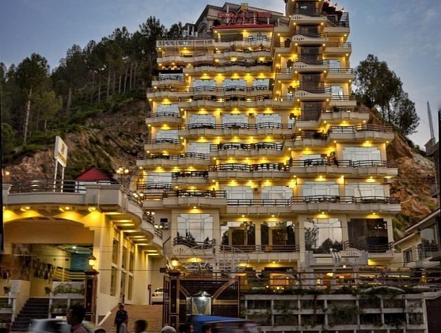

Mr. Tariq Rehman | Dec 04,2021 | 108 comments | 15 min read
"My 10 days trip to Swat has overwhelmed me with peace, serenity and harmony. The memories I collected will last
with me forever."
The exquisite view, the lush green mountain areas, the purest Swat Valley and the welcoming nature of the
people, I think the heavenly place will last in my memory forever.
Swat is known as the 'mini Switzerland' of Pakistan. It constitutes a majority of Pathan community and the
best thing that is worth praising about Swat is their hosting, they make their guests feel like home.
I first came across the magnificent Darya e Swat; best leisure seeking and the perfect spot to gain peace
and harmony. It was as pure as a newborn baby.
Winding up the glorious Swat Valley venture, we travelled to White Palace which is located in Marghazar
Valley in Swat.
I was impressed by the flora and fauna of this beautiful place and was eager to learn about
the history. Then
I came to know that the royal family of Swat used to live in this place. It's not merely a hotel but a
cultural heritage of Swat, Pakistan. The white marbles used in the construction of this Palace was brought
from Jaipur in India, the same place where the Taj Mahal's marble came from. The Bronze used in the ceiling
was brought from Belgium, its artisan from Turkey and the electrical equipment were brought from England.
Then later we came around the mirthful Fizagat Park.
If you're visiting Swat Valley, KPK, you can't skip this recreational park in the vicinity of
Mangora. If you eye the view of Darya e Swat from this park, you'd find it breathtaking. It's a beautiful
place to gather with your loved ones, the hotels around are worth to capture in your travel diaries. At the
night, the location spellbound the atmosphere, believe me.
Opposite to the park, we find the Burj Al Swat Hotel, it holds the same value as Burj Khalifa to Dubai.

You must be taken away from the beautiful structure of this hotel, I was also. It's a
multi-story, luxury hotel located opposite to Fizagat park. It's one of the spacious spots where you can
enjoy the city life with state of the art facilities, attend your business conferences and step in with your
loved ones. Home to the world-class services and tailor-made programs.
Kalam is the perfect destination for tourists and adventure seekers. Surrounded by the
abundant green hills,
bulky forests, you'd be mesmerized magnificent, lakes and waterfalls. It's the source of Swat river.
Kalam is one the best tourist spots in Pakistan. If you're looking for local adventure for
trekking, I'd recommend you to list this place on top. A true gem of nature covered by the gushing streams
and spectacular mountains.
If you want to start travelling, I'd recommend you to explore our local beauty before foreign travelling. I
feel proud of Pakistan tourism, the lush green views deserve to unfold so people from other countries can
also see the endearing places in Pakistan.